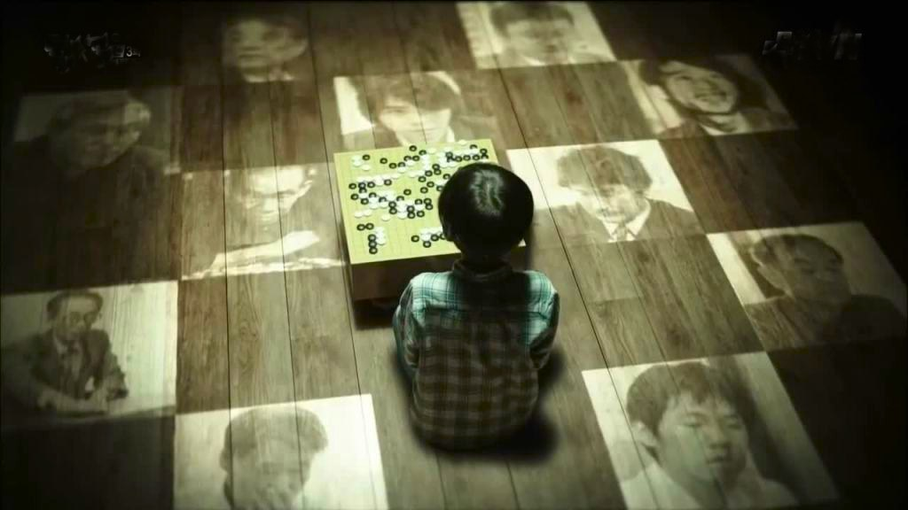
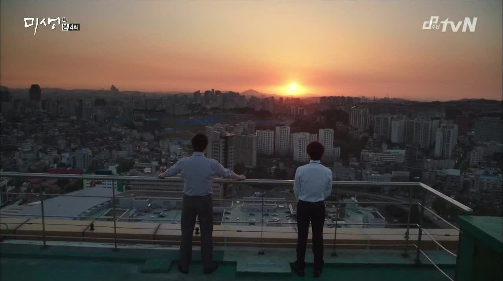
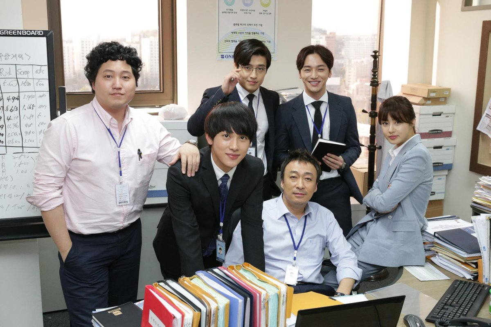

<link rel="stylesheet" href="fullbleed.css">
<link rel="stylesheet" href="https://fonts.googleapis.com/css?family=Roboto">
<head>
  <link rel="icon" href="favicon.ico">
  <title>Misaeng: Incomplete Life</title>
</head>
<main class="wrapper">
  <h1 class="center">Misaeng: Incomplete Life</h1>
  <p>Relative to American shows, Korean dramas are unreservedly earnest and wholehearted. The characters, as well as the plot and aesthetics, are deeply sincere in an almost youthful naivety. I will try to explain how I got this sense from Misaeng, the story of an almost but not quite professional Go player attempting to enter the corporate world.</p>
  
<p>I normally wouldn't talk much about myself, but I figured I should introduce where I'm coming from with this blog. A friend mentioned she was getting into C-pop, and it seemed funny that with more global consumption of asian culture we have terms for C-pop, K-pop, J-pop, maybe more idk, but American pop isn't A-pop, it's just pop. So, of course, I'm taking American shows as normal and judging Misaeng against them. Hence K Drama: A Perspective, my ambigious because idk what I'm doing title (is it A for American perspective? Is it A as in a rather than the persepctive? Are the Korean dramas the perspective? Is it a perspective on the dramas? Who knows, not me).</p>
<p>Misaeng is about One International, a trading company, and takes the business more seriously than American office dramas. A cheap comparison would be to The Office, in which Dunder Mifflin Paper Company is deliberately generic and boring as a joke. Maybe there are shows like Parks and Rec and The West Wing that have people who also care deeply about their work, but, again, Korean protagonists somehow get even more into it. Office work, politics, clothing, and overwork are quotidian and ubiquitous but also taken as genuinely important, and almost melodramtic by nature.</p>
  
<p>For example, a father figure to the main character has his own young kids, one of whom dresses up like a trader while the rest of his class is in superhero costumes. He proudly yells at his classmates that "what's a tradingman? tradingman is the ultrabest hero in the world. He buys products for everyone on earth. They make poor countries rich while supplying water to those without. He beats Spiderman, Batman, and Ironman..." It's a little kid saying it, but it feels like to some extent it's the people who make the show speaking through him. The cute kid is also part of the family motivating his father, with family and career something else they take really seriously. It's a sort of constant struggle: in Go terms (as far as I can tell), Misaeng means a sort of incomplete state in Go, which could go either way, and similarly the salaried workers are always striving to better their incomplete lives.</p>
<p>In addition to caring about their work for the sake of their families, they take pride in Korea. Trading solutions are seen as particularly elegant when they make use of Korean labor, materials, resources, or whatever, instead of those of other countries. When they celebrate an accomplishment or have an auspicious discussion, they eat Korean beef. This is not to say that Korea is unfriendly or arrogant towards other countries, and learning foreign languages confers cultural capital. Geu-Rae, at the beginning of the show, doesn't speak English, but learns as he goes on. And his first major accomplishment with One International is keeping the attention of a white, English speaking businessman by showing him Go, and in general international business is a sign that you're doing something big and prestigious. But still, they're doing business for the glory of the company and Korea.</p>
<p>It's easier to cheer for Korean pride than American pride because the country has more of an underdog story (ie occupied, not trying to colonize others). Someone explained Chuseok, a sort of Korean Thanksgiving, to me as (paraphrased) "Korea used to be poor, Chuseok was the only time we could eat food we wanted to. Now we can eat whatever we want, whenever we want! But we still celebrate eating traditional food on Chuseok." It's just nice to see Korea thriving economically (in the K-dramas themselves, and on a meta level with their global dissemination).</p>
<p>Back to Misaeng, the point is there's a lot on the line with this work. Geu-Rae's position as an intern/temporary worker is at stake throughout the show, but also family, company, and country. The drama doesn't treat business as some sort of background that important relationships between characters happen in front of; office work is what drives friends and enemies. Looking through records of potentially fraudulent transactions is incredibly high stakes, breath holding activity, <a href="https://www.youtube.com/watch?v=x90FtN30SYQ&list=PL25YOnXj_wsJAJVruT6malxGoGjhjraVf&index=18&ab_channel=JeonSae-jin-Topic">with tone set by this music</a> But the music and show are at times cheerful and melancholy too.</p> 
<p>In general, taking office work so seriously is what makes the show great, so I like that Korean dramas are exploring their space, but I also felt like because they go so hard, an American show would take 2/3 of the time Misaeng takes to introduce characters at first. There are sort of tropes and expectations you'd already expect, so instead of an asshole coworker making a bunch of jeering comments and then ruining Geu-Rae's new suit in a freezing sloppy squid tank, he would just say a few hurtful things. But, maybe because Korean office drama is younger, or because they just go hard in general, they take a long time to show thoroughly that someone is nice or mean or whatever.</p>
<p>The plus side of this is you come to care intensely, as the characters do, about the details of a contract for whatever random sale.</p>
  
<p>Misaeng was the first K-Drama I watched, so maybe I just extrapolated way too far off of it, but I really got the sense that it keeps going in terms of emotional investment and ardor where an American show might say you get the picture and stop because going further would compromise verisimilitude. So my sense going into other Korean dramas is that any personality trait or thing people care about is more heavily drawn, in the heroes, villains, whoever.</p>
</main>
